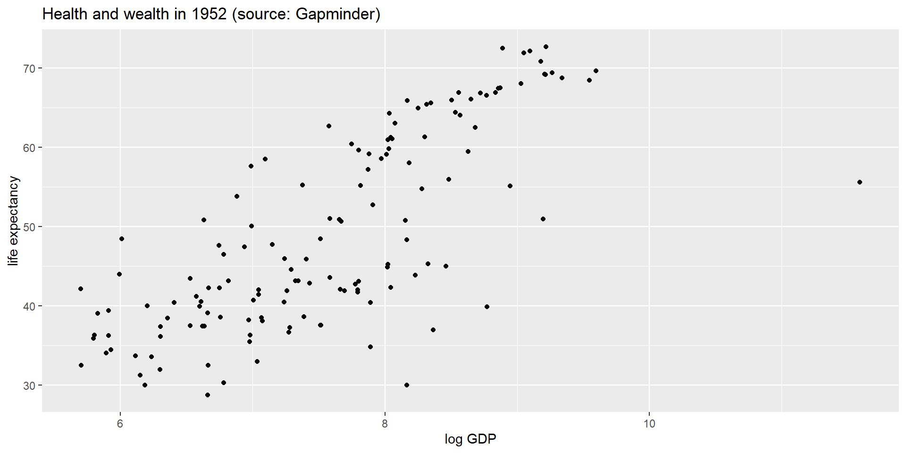
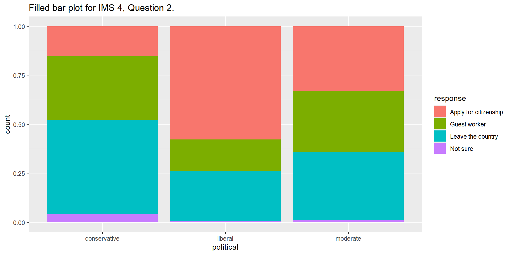

Adelie Chinstrap Gentoo
152 68 124 Numerical data (1)
ECON 2B03, Winter 2026
Part A | Lecture 4
Chris Muris, McMaster University
Agenda
Roadmap
- Previously, we:
- Discussed course objectives and organization
- Seen key definitions in statistics:
- descriptive and inferential statistics
- population, sample, census, sample data, and sample size
- parameter and statistic
- individuals, variables, measurements, and distributions
- qualitative/categorical and quantitative/numerical variables
- frequencies and proportions
- data lists, data frequency tables, and bar plots
- Started with
Randquarto
- This lecture, we:
- Frequency tables for numerical data (classes, Sturges’ rule)
- Graphs for one quantitative variable (histogram, density plots)
- Graphs for two quantitative variables (scatter plot)
- Multivariate plots (faceting, coloring) for combining numerical and categorical variables
Readings and homework
- Readings: SZ 2.1, IMS 4.6, 5.1-5.3
- Homework: SZ 2.1: 4, 5, 7, 8, 13, 15; IMS: N/A
Overview
- Why this matters: histograms and scatter plots reveal patterns in numerical data that tables alone cannot show.
- What you will learn:
- how to construct frequency tables for numerical data using classes
- how to make histograms, density plots, and scatter plots in R
- how to combine numerical and categorical variables in multivariate plots
Part I: Frequency Tables
Classes
- We saw that frequency tables are useful summaries of categorical variables:
- In the data frequency table above, we list one frequency for each value in the data list
- Sometimes, there are many values
- This happens with numerical variables, like
bill_length

- In these cases, a frequency table is not informative:
32.1 33.1 33.5 34 34.1 34.4 34.5 34.6 35 35.1 35.2 35.3 35.5 35.6 35.7 35.9
1 1 1 1 1 1 1 2 2 1 1 1 2 1 3 2
36 36.2 36.3 36.4 36.5 36.6 36.7 36.8 36.9 37 37.2 37.3 37.5 37.6 37.7 37.8
4 3 1 2 2 2 2 1 1 2 2 3 2 3 3 5
37.9 38.1 38.2 38.3 38.5 38.6 38.7 38.8 38.9 39 39.1 39.2 39.3 39.5 39.6 39.7
2 4 2 1 1 3 1 3 2 3 1 3 1 3 5 4
39.8 40.1 40.2 40.3 40.5 40.6 40.7 40.8 40.9 41 41.1 41.3 41.4 41.5 41.6 41.7
1 1 3 2 2 4 1 2 4 1 7 2 2 2 1 1
41.8 42 42.1 42.2 42.3 42.4 42.5 42.6 42.7 42.8 42.9 43.1 43.2 43.3 43.4 43.5
1 3 1 2 1 1 3 1 2 2 2 1 4 2 1 3
43.6 43.8 44 44.1 44.4 44.5 44.9 45 45.1 45.2 45.3 45.4 45.5 45.6 45.7 45.8
1 1 1 2 1 3 2 1 3 6 2 2 5 2 3 3
45.9 46 46.1 46.2 46.3 46.4 46.5 46.6 46.7 46.8 46.9 47 47.2 47.3 47.4 47.5
1 2 3 5 1 4 5 2 2 4 2 1 2 2 1 4
47.6 47.7 47.8 48.1 48.2 48.4 48.5 48.6 48.7 48.8 49 49.1 49.2 49.3 49.4 49.5
2 1 1 2 2 3 3 1 3 1 3 3 2 2 1 3
49.6 49.7 49.8 49.9 50 50.1 50.2 50.3 50.4 50.5 50.6 50.7 50.8 50.9 51 51.1
3 1 3 1 5 2 3 1 2 5 1 2 4 2 1 2
51.3 51.4 51.5 51.7 51.9 52 52.1 52.2 52.5 52.7 52.8 53.4 53.5 54.2 54.3 55.1
4 1 2 1 1 3 1 2 1 1 1 1 1 1 1 1
55.8 55.9 58 59.6
1 1 1 1 Example: wage1 data
- Similar for the
wage1data from thewooldridgepackage:
wage n percent
0.53 1 0.001901141
1.43 1 0.001901141
1.50 2 0.003802281
1.63 1 0.001901141
1.67 1 0.001901141
1.75 1 0.001901141
1.96 1 0.001901141
2.00 4 0.007604563
2.14 1 0.001901141
2.17 1 0.001901141
2.23 1 0.001901141
2.25 1 0.001901141
2.27 1 0.001901141
2.30 1 0.001901141
2.31 1 0.001901141
2.38 1 0.001901141
2.50 1 0.001901141
2.53 1 0.001901141
2.54 1 0.001901141
2.60 1 0.001901141
2.65 1 0.001901141
2.70 1 0.001901141
2.75 1 0.001901141
2.83 1 0.001901141
2.87 1 0.001901141
2.88 1 0.001901141
2.89 2 0.003802281
2.90 16 0.030418251
2.91 4 0.007604563
2.92 5 0.009505703
2.93 1 0.001901141
2.95 3 0.005703422
3.00 34 0.064638783
3.05 3 0.005703422
3.06 1 0.001901141
3.08 1 0.001901141
3.10 4 0.007604563
3.13 3 0.005703422
3.15 2 0.003802281
3.18 1 0.001901141
3.20 4 0.007604563
3.24 2 0.003802281
3.25 8 0.015209125
3.26 2 0.003802281
3.28 1 0.001901141
3.29 1 0.001901141
3.30 3 0.005703422
3.33 2 0.003802281
3.35 5 0.009505703
3.37 1 0.001901141
3.40 2 0.003802281
3.45 2 0.003802281
3.50 18 0.034220532
3.51 2 0.003802281
3.52 1 0.001901141
3.54 1 0.001901141
3.55 2 0.003802281
3.58 1 0.001901141
3.60 3 0.005703422
3.64 1 0.001901141
3.65 1 0.001901141
3.71 2 0.003802281
3.73 1 0.001901141
3.75 11 0.020912548
3.76 1 0.001901141
3.80 1 0.001901141
3.81 1 0.001901141
3.83 1 0.001901141
3.85 1 0.001901141
3.88 1 0.001901141
3.91 1 0.001901141
3.95 1 0.001901141
4.00 15 0.028517110
4.05 2 0.003802281
4.08 1 0.001901141
4.10 3 0.005703422
4.11 1 0.001901141
4.14 1 0.001901141
4.17 1 0.001901141
4.20 3 0.005703422
4.24 1 0.001901141
4.25 1 0.001901141
4.27 1 0.001901141
4.28 1 0.001901141
4.29 2 0.003802281
4.33 1 0.001901141
4.34 1 0.001901141
4.38 2 0.003802281
4.44 2 0.003802281
4.50 20 0.038022814
4.51 1 0.001901141
4.55 2 0.003802281
4.57 2 0.003802281
4.60 1 0.001901141
4.63 2 0.003802281
4.65 2 0.003802281
4.67 1 0.001901141
4.68 3 0.005703422
4.69 1 0.001901141
4.72 1 0.001901141
4.75 3 0.005703422
4.79 2 0.003802281
4.81 1 0.001901141
4.91 1 0.001901141
4.95 1 0.001901141
5.00 14 0.026615970
5.05 2 0.003802281
5.11 1 0.001901141
5.13 1 0.001901141
5.15 1 0.001901141
5.20 1 0.001901141
5.25 5 0.009505703
5.30 1 0.001901141
5.40 1 0.001901141
5.43 1 0.001901141
5.48 1 0.001901141
5.50 2 0.003802281
5.52 1 0.001901141
5.58 1 0.001901141
5.60 2 0.003802281
5.63 1 0.001901141
5.65 1 0.001901141
5.70 1 0.001901141
5.71 3 0.005703422
5.75 1 0.001901141
5.77 1 0.001901141
5.78 1 0.001901141
5.80 1 0.001901141
5.83 1 0.001901141
5.84 1 0.001901141
5.90 2 0.003802281
5.91 1 0.001901141
5.95 1 0.001901141
6.00 10 0.019011407
6.08 2 0.003802281
6.11 1 0.001901141
6.15 2 0.003802281
6.18 1 0.001901141
6.22 1 0.001901141
6.25 18 0.034220532
6.26 1 0.001901141
6.29 1 0.001901141
6.33 2 0.003802281
6.35 1 0.001901141
6.36 2 0.003802281
6.38 1 0.001901141
6.43 1 0.001901141
6.45 1 0.001901141
6.46 1 0.001901141
6.50 7 0.013307985
6.53 1 0.001901141
6.63 3 0.005703422
6.67 2 0.003802281
6.76 1 0.001901141
6.80 1 0.001901141
6.85 1 0.001901141
6.88 4 0.007604563
7.00 2 0.003802281
7.14 2 0.003802281
7.25 1 0.001901141
7.26 1 0.001901141
7.36 1 0.001901141
7.50 6 0.011406844
7.60 1 0.001901141
7.63 1 0.001901141
7.78 2 0.003802281
7.81 1 0.001901141
7.90 1 0.001901141
8.00 6 0.011406844
8.02 1 0.001901141
8.10 1 0.001901141
8.13 1 0.001901141
8.18 1 0.001901141
8.33 2 0.003802281
8.43 2 0.003802281
8.45 1 0.001901141
8.48 1 0.001901141
8.50 1 0.001901141
8.53 1 0.001901141
8.60 1 0.001901141
8.63 1 0.001901141
8.64 1 0.001901141
8.65 1 0.001901141
8.75 7 0.013307985
8.77 1 0.001901141
8.80 1 0.001901141
8.92 1 0.001901141
9.00 3 0.005703422
9.05 1 0.001901141
9.09 1 0.001901141
9.13 1 0.001901141
9.30 1 0.001901141
9.33 1 0.001901141
9.42 1 0.001901141
9.56 1 0.001901141
9.68 1 0.001901141
9.80 1 0.001901141
9.85 1 0.001901141
10.00 15 0.028517110
10.38 1 0.001901141
10.63 1 0.001901141
10.91 1 0.001901141
10.92 1 0.001901141
10.95 1 0.001901141
11.10 1 0.001901141
11.11 1 0.001901141
11.25 2 0.003802281
11.55 1 0.001901141
11.56 1 0.001901141
11.71 1 0.001901141
11.76 1 0.001901141
11.82 1 0.001901141
11.90 1 0.001901141
11.98 1 0.001901141
12.22 1 0.001901141
12.39 1 0.001901141
12.50 7 0.013307985
13.00 1 0.001901141
13.08 1 0.001901141
13.16 1 0.001901141
13.33 1 0.001901141
13.70 1 0.001901141
13.95 1 0.001901141
14.38 1 0.001901141
14.58 1 0.001901141
15.00 3 0.005703422
15.38 1 0.001901141
17.33 1 0.001901141
17.50 1 0.001901141
17.71 1 0.001901141
18.00 1 0.001901141
18.16 2 0.003802281
18.18 1 0.001901141
18.89 1 0.001901141
19.98 1 0.001901141
20.00 1 0.001901141
21.63 1 0.001901141
21.86 1 0.001901141
22.20 1 0.001901141
22.86 1 0.001901141
24.98 1 0.001901141- It makes sense to split sample data into classes
- A class is a set of values
- For example, one class could be \([8,10]\), the interval of hourly wages between 8 and 10
- How to pick classes for our sample data?
- How we split the data often depends on the data type:
- qualitative/categorical (nominal or ordinal)
- quantitative/numerical (discrete or continuous)
- Data classes should be:
- collectively exhaustive
- mutually exclusive
- First, pick the number of classes:
- Desirable class number:
- Should fit data type
- Often recommended: between 5 and 20
- Sturges’ rule: desirable number of classes = \(k\), the integer closest to \[1 + 3.3 \log_{10} n,\] where \(\log_{10} n\) is the power to which \(10\) is raised to get \(n\).
- Desirable class number:
- The sample size is the number of individuals in a sample.
- We use the symbol \(n\) for the sample size.
Example: Sturges’ Rule
- If \(n=1,000\), then \(\log_{10}1000=3\)
- In this case, \(1+3.3\log_{10}1000 = 10.9\)
- Sturges’ rule: use \(k=11\)
Example: Sturges’ Rule, wage1 data
- For the
wage1data:
Second, compute class widths and boundaries.
Desirable class widths:
- class width is the difference between the lower and upper limits (boundaries) of a class
- to achieve uniform class widths: \[\begin{equation*} \text{class width}=\frac{\text{largest value - smallest value}}{\text{desirable class number}} \end{equation*}\]
Desirable class boundaries:
- for the lowest (first) class: the left (lower) boundary can be the smallest number in the data set, the right (upper) boundary this number plus the class width
- for subsequent classes: the left boundary of each class can be the upper boundary from the class below it, the right boundary this value plus the class width
- For the
wage1data, recall that we have a sample size, and a number of classes from Sturges’ rule, of
- We can use the
cutfunction to classify each measurement. I will save the classified data as a new variablewage_cut
wage educ exper female wage_cut
1 3.10 11 2 1 (2.97,5.42]
2 3.24 12 22 1 (2.97,5.42]
3 3.00 11 2 0 (2.97,5.42]
4 6.00 8 44 0 (5.42,7.86]
5 5.30 12 7 0 (2.97,5.42]
6 8.75 16 9 0 (7.86,10.3]
7 11.25 18 15 0 (10.3,12.8]
8 5.00 12 5 1 (2.97,5.42]
9 3.60 12 26 1 (2.97,5.42]
10 18.18 17 22 0 (17.6,20.1]
11 6.25 16 8 1 (5.42,7.86]
12 8.13 13 3 1 (7.86,10.3]
13 8.77 12 15 0 (7.86,10.3]
14 5.50 12 18 0 (5.42,7.86]
15 22.20 12 31 0 (20.1,22.5]
16 17.33 16 14 0 (15.2,17.6]
17 7.50 12 10 1 (5.42,7.86]
18 10.63 13 16 1 (10.3,12.8]
19 3.60 12 13 1 (2.97,5.42]
20 4.50 12 36 1 (2.97,5.42]
21 6.88 12 11 1 (5.42,7.86]
22 8.48 12 29 0 (7.86,10.3]
23 6.33 16 9 1 (5.42,7.86]
24 0.53 12 3 1 (0.506,2.97]
25 6.00 11 37 1 (5.42,7.86]
26 9.56 16 3 0 (7.86,10.3]
27 7.78 16 11 0 (5.42,7.86]
28 12.50 16 31 0 (10.3,12.8]
29 12.50 15 30 0 (10.3,12.8]
30 3.25 8 9 1 (2.97,5.42]
31 13.00 14 23 0 (12.8,15.2]
32 4.50 14 2 1 (2.97,5.42]
33 9.68 13 16 1 (7.86,10.3]
34 5.00 12 7 1 (2.97,5.42]
35 4.68 12 3 1 (2.97,5.42]
36 4.27 16 22 1 (2.97,5.42]
37 6.15 12 15 1 (5.42,7.86]
38 3.51 4 39 0 (2.97,5.42]
39 3.00 14 3 1 (2.97,5.42]
40 6.25 12 11 1 (5.42,7.86]
41 7.81 12 3 1 (5.42,7.86]
42 10.00 12 20 1 (7.86,10.3]
43 4.50 14 16 1 (2.97,5.42]
44 4.00 11 45 1 (2.97,5.42]
45 6.38 13 11 1 (5.42,7.86]
46 13.70 15 20 0 (12.8,15.2]
47 1.67 10 1 0 (0.506,2.97]
48 2.93 12 36 1 (0.506,2.97]
49 3.65 14 9 0 (2.97,5.42]
50 2.90 12 15 1 (0.506,2.97]
51 1.63 12 18 1 (0.506,2.97]
52 8.60 16 3 1 (7.86,10.3]
53 5.00 12 15 0 (2.97,5.42]
54 6.00 12 7 0 (5.42,7.86]
55 2.50 12 2 0 (0.506,2.97]
56 3.25 15 3 0 (2.97,5.42]
57 3.40 16 1 1 (2.97,5.42]
58 10.00 8 13 0 (7.86,10.3]
59 21.63 18 8 1 (20.1,22.5]
60 4.38 16 7 0 (2.97,5.42]
61 11.71 13 40 1 (10.3,12.8]
62 12.39 14 42 0 (10.3,12.8]
63 6.25 10 36 0 (5.42,7.86]
64 3.71 10 13 1 (2.97,5.42]
65 7.78 14 9 0 (5.42,7.86]
66 19.98 14 26 0 (17.6,20.1]
67 6.25 16 7 1 (5.42,7.86]
68 10.00 12 25 0 (7.86,10.3]
69 5.71 16 10 0 (5.42,7.86]
70 2.00 12 3 1 (0.506,2.97]
71 5.71 16 3 1 (5.42,7.86]
72 13.08 17 17 0 (12.8,15.2]
73 4.91 12 17 0 (2.97,5.42]
74 2.91 12 20 1 (0.506,2.97]
75 3.75 12 7 1 (2.97,5.42]
76 11.90 13 24 0 (10.3,12.8]
77 4.00 12 28 1 (2.97,5.42]
78 3.10 12 2 1 (2.97,5.42]
79 8.45 12 19 0 (7.86,10.3]
80 7.14 18 13 0 (5.42,7.86]
81 4.50 9 22 0 (2.97,5.42]
82 4.65 16 3 0 (2.97,5.42]
83 2.90 10 4 1 (0.506,2.97]
84 6.67 12 7 0 (5.42,7.86]
85 3.50 12 6 1 (2.97,5.42]
86 3.26 12 13 1 (2.97,5.42]
87 3.25 12 14 1 (2.97,5.42]
88 8.00 12 14 1 (7.86,10.3]
89 9.85 8 40 0 (7.86,10.3]
90 7.50 12 11 0 (5.42,7.86]
91 5.91 12 14 0 (5.42,7.86]
92 11.76 14 40 0 (10.3,12.8]
93 3.00 12 1 1 (2.97,5.42]
94 4.81 12 2 1 (2.97,5.42]
95 6.50 12 4 1 (5.42,7.86]
96 4.00 9 19 1 (2.97,5.42]
97 3.50 13 1 0 (2.97,5.42]
98 13.16 12 34 0 (12.8,15.2]
99 4.25 14 5 0 (2.97,5.42]
100 3.50 12 3 0 (2.97,5.42]
101 5.13 15 6 1 (2.97,5.42]
102 3.75 12 14 1 (2.97,5.42]
103 4.50 12 35 1 (2.97,5.42]
104 7.63 12 8 1 (5.42,7.86]
105 15.00 14 7 0 (12.8,15.2]
106 6.85 15 11 1 (5.42,7.86]
107 13.33 12 14 0 (12.8,15.2]
108 6.67 12 35 0 (5.42,7.86]
109 2.53 12 46 1 (0.506,2.97]
110 9.80 17 7 0 (7.86,10.3]
111 3.37 11 45 0 (2.97,5.42]
112 24.98 18 29 0 (22.5,25]
113 5.40 12 6 0 (2.97,5.42]
114 6.11 14 15 0 (5.42,7.86]
115 4.20 14 33 1 (2.97,5.42]
116 3.75 10 15 0 (2.97,5.42]
117 3.50 14 5 1 (2.97,5.42]
118 3.64 12 7 0 (2.97,5.42]
119 3.80 15 6 0 (2.97,5.42]
120 3.00 8 33 1 (2.97,5.42]
121 5.00 16 2 1 (2.97,5.42]
122 4.63 14 4 1 (2.97,5.42]
123 3.00 15 1 0 (2.97,5.42]
124 3.20 12 29 1 (2.97,5.42]
125 3.91 18 17 0 (2.97,5.42]
126 6.43 16 17 1 (5.42,7.86]
127 5.48 10 36 1 (5.42,7.86]
128 1.50 8 31 0 (0.506,2.97]
129 2.90 10 23 1 (0.506,2.97]
130 5.00 11 13 0 (2.97,5.42]
131 8.92 18 3 0 (7.86,10.3]
132 5.00 15 15 0 (2.97,5.42]
133 3.52 12 48 0 (2.97,5.42]
134 2.90 11 6 1 (0.506,2.97]
135 4.50 12 12 0 (2.97,5.42]
136 2.25 12 5 1 (0.506,2.97]
137 5.00 14 19 0 (2.97,5.42]
138 10.00 16 9 0 (7.86,10.3]
139 3.75 2 39 0 (2.97,5.42]
140 10.00 14 28 1 (7.86,10.3]
141 10.95 16 23 0 (10.3,12.8]
142 7.90 12 2 0 (7.86,10.3]
143 4.72 12 15 1 (2.97,5.42]
144 5.84 13 5 1 (5.42,7.86]
145 3.83 12 18 1 (2.97,5.42]
146 3.20 15 2 1 (2.97,5.42]
147 2.00 10 3 1 (0.506,2.97]
148 4.50 12 31 1 (2.97,5.42]
149 11.55 16 20 1 (10.3,12.8]
150 2.14 13 34 1 (0.506,2.97]
151 2.38 9 5 0 (0.506,2.97]
152 3.75 12 11 0 (2.97,5.42]
153 5.52 13 31 0 (5.42,7.86]
154 6.50 12 8 1 (5.42,7.86]
155 3.10 12 2 1 (2.97,5.42]
156 10.00 14 18 0 (7.86,10.3]
157 6.63 16 3 0 (5.42,7.86]
158 10.00 16 3 0 (7.86,10.3]
159 2.31 9 4 1 (0.506,2.97]
160 6.88 18 4 0 (5.42,7.86]
161 2.83 10 1 0 (0.506,2.97]
162 3.13 10 1 1 (2.97,5.42]
163 8.00 13 28 0 (7.86,10.3]
164 4.50 12 47 1 (2.97,5.42]
165 8.65 18 13 1 (7.86,10.3]
166 2.00 13 2 1 (0.506,2.97]
167 4.75 12 48 1 (2.97,5.42]
168 6.25 13 6 1 (5.42,7.86]
169 6.00 13 8 0 (5.42,7.86]
170 15.38 13 25 0 (15.2,17.6]
171 14.58 18 13 1 (12.8,15.2]
172 12.50 12 8 0 (10.3,12.8]
173 5.25 12 19 1 (2.97,5.42]
174 2.17 13 1 1 (0.506,2.97]
175 7.14 12 43 1 (5.42,7.86]
176 6.22 12 19 1 (5.42,7.86]
177 9.00 12 11 1 (7.86,10.3]
178 10.00 14 43 0 (7.86,10.3]
179 5.77 10 44 0 (5.42,7.86]
180 4.00 12 22 1 (2.97,5.42]
181 8.75 16 3 0 (7.86,10.3]
182 6.53 16 3 1 (5.42,7.86]
183 7.60 12 41 1 (5.42,7.86]
184 5.00 14 5 0 (2.97,5.42]
185 5.00 12 14 1 (2.97,5.42]
186 21.86 12 24 0 (20.1,22.5]
187 8.64 12 28 0 (7.86,10.3]
188 3.30 12 25 0 (2.97,5.42]
189 4.44 12 3 0 (2.97,5.42]
190 4.55 12 11 0 (2.97,5.42]
191 3.50 12 7 1 (2.97,5.42]
192 6.25 16 9 0 (5.42,7.86]
193 3.85 16 5 0 (2.97,5.42]
194 6.18 14 9 1 (5.42,7.86]
195 2.91 11 1 1 (0.506,2.97]
196 6.25 16 2 1 (5.42,7.86]
197 6.25 12 13 1 (5.42,7.86]
198 9.05 12 10 0 (7.86,10.3]
199 10.00 17 5 0 (7.86,10.3]
200 11.11 12 30 0 (10.3,12.8]
201 6.88 12 31 0 (5.42,7.86]
202 8.75 16 1 0 (7.86,10.3]
203 10.00 8 9 0 (7.86,10.3]
204 3.05 12 10 1 (2.97,5.42]
205 3.00 12 38 1 (2.97,5.42]
206 5.80 12 19 1 (5.42,7.86]
207 4.10 16 5 1 (2.97,5.42]
208 8.00 12 26 0 (7.86,10.3]
209 6.15 12 35 1 (5.42,7.86]
210 2.70 9 2 1 (0.506,2.97]
211 2.75 13 1 1 (0.506,2.97]
212 3.00 16 19 1 (2.97,5.42]
213 3.00 14 3 1 (2.97,5.42]
214 7.36 8 36 0 (5.42,7.86]
215 7.50 14 29 0 (5.42,7.86]
216 3.50 13 1 0 (2.97,5.42]
217 8.10 12 38 1 (7.86,10.3]
218 3.75 18 1 0 (2.97,5.42]
219 3.25 9 29 0 (2.97,5.42]
220 5.83 8 36 1 (5.42,7.86]
221 3.50 8 4 0 (2.97,5.42]
222 3.33 12 45 1 (2.97,5.42]
223 4.00 14 22 1 (2.97,5.42]
224 3.50 12 20 1 (2.97,5.42]
225 6.25 16 5 0 (5.42,7.86]
226 2.95 8 15 1 (0.506,2.97]
227 5.71 13 10 1 (5.42,7.86]
228 3.00 9 3 1 (2.97,5.42]
229 22.86 16 16 0 (22.5,25]
230 9.00 12 38 0 (7.86,10.3]
231 8.33 15 33 0 (7.86,10.3]
232 3.00 11 2 0 (2.97,5.42]
233 5.75 14 6 0 (5.42,7.86]
234 6.76 12 19 0 (5.42,7.86]
235 10.00 12 29 0 (7.86,10.3]
236 3.00 12 2 0 (2.97,5.42]
237 3.50 18 3 1 (2.97,5.42]
238 3.25 12 4 0 (2.97,5.42]
239 4.00 12 10 1 (2.97,5.42]
240 2.92 12 4 1 (0.506,2.97]
241 3.06 12 14 1 (2.97,5.42]
242 3.20 12 15 1 (2.97,5.42]
243 4.75 12 19 0 (2.97,5.42]
244 3.00 14 17 1 (2.97,5.42]
245 18.16 16 29 0 (17.6,20.1]
246 3.50 12 2 1 (2.97,5.42]
247 4.11 14 5 0 (2.97,5.42]
248 1.96 11 38 1 (0.506,2.97]
249 4.29 12 3 1 (2.97,5.42]
250 3.00 10 47 0 (2.97,5.42]
251 6.45 12 7 0 (5.42,7.86]
252 5.20 6 47 0 (2.97,5.42]
253 4.50 13 23 1 (2.97,5.42]
254 3.88 12 12 0 (2.97,5.42]
255 3.45 10 11 1 (2.97,5.42]
256 10.91 12 25 0 (10.3,12.8]
257 4.10 14 6 1 (2.97,5.42]
258 3.00 13 3 0 (2.97,5.42]
259 5.90 12 14 0 (5.42,7.86]
260 18.00 18 13 1 (17.6,20.1]
261 4.00 12 9 0 (2.97,5.42]
262 3.00 12 1 0 (2.97,5.42]
263 3.55 12 6 1 (2.97,5.42]
264 3.00 12 11 1 (2.97,5.42]
265 8.75 12 47 0 (7.86,10.3]
266 2.90 8 49 1 (0.506,2.97]
267 6.26 13 37 1 (5.42,7.86]
268 3.50 13 2 1 (2.97,5.42]
269 4.60 14 7 1 (2.97,5.42]
270 6.00 12 22 0 (5.42,7.86]
271 2.89 10 8 1 (0.506,2.97]
272 5.58 16 1 0 (5.42,7.86]
273 4.00 12 43 1 (2.97,5.42]
274 6.00 16 2 0 (5.42,7.86]
275 4.50 12 2 1 (2.97,5.42]
276 2.92 14 1 0 (0.506,2.97]
277 4.33 18 1 0 (2.97,5.42]
278 18.89 17 26 0 (17.6,20.1]
279 4.28 13 1 1 (2.97,5.42]
280 4.57 14 37 1 (2.97,5.42]
281 6.25 15 12 1 (5.42,7.86]
282 2.95 14 41 0 (0.506,2.97]
283 8.75 12 24 0 (7.86,10.3]
284 8.50 8 38 0 (7.86,10.3]
285 3.75 12 18 1 (2.97,5.42]
286 3.15 12 26 0 (2.97,5.42]
287 5.00 8 45 0 (2.97,5.42]
288 6.46 12 27 0 (5.42,7.86]
289 2.00 9 2 0 (0.506,2.97]
290 4.79 12 41 0 (2.97,5.42]
291 5.78 16 11 0 (5.42,7.86]
292 3.18 12 5 1 (2.97,5.42]
293 4.68 16 3 1 (2.97,5.42]
294 4.10 12 3 1 (2.97,5.42]
295 2.91 12 4 0 (0.506,2.97]
296 6.00 13 21 0 (5.42,7.86]
297 3.60 10 34 1 (2.97,5.42]
298 3.95 6 49 0 (2.97,5.42]
299 7.00 12 6 0 (5.42,7.86]
300 3.00 12 26 1 (2.97,5.42]
301 6.08 16 9 0 (5.42,7.86]
302 8.63 12 23 0 (7.86,10.3]
303 3.00 8 33 0 (2.97,5.42]
304 3.75 12 5 1 (2.97,5.42]
305 2.90 6 49 0 (0.506,2.97]
306 3.00 4 48 0 (2.97,5.42]
307 6.25 11 35 0 (5.42,7.86]
308 3.50 11 23 1 (2.97,5.42]
309 3.00 7 26 1 (2.97,5.42]
310 3.24 12 16 1 (2.97,5.42]
311 8.02 18 23 1 (7.86,10.3]
312 3.33 12 36 1 (2.97,5.42]
313 5.25 16 4 0 (2.97,5.42]
314 6.25 12 10 0 (5.42,7.86]
315 3.50 14 18 0 (2.97,5.42]
316 2.95 12 3 0 (0.506,2.97]
317 3.00 10 7 1 (2.97,5.42]
318 4.69 10 7 0 (2.97,5.42]
319 3.73 9 33 1 (2.97,5.42]
320 4.00 10 34 0 (2.97,5.42]
321 4.00 12 8 1 (2.97,5.42]
322 2.90 12 17 1 (0.506,2.97]
323 3.05 12 2 1 (2.97,5.42]
324 5.05 10 5 1 (2.97,5.42]
325 13.95 16 41 0 (12.8,15.2]
326 18.16 16 35 0 (17.6,20.1]
327 6.25 16 11 0 (5.42,7.86]
328 5.25 12 4 0 (2.97,5.42]
329 4.79 12 12 1 (2.97,5.42]
330 3.35 7 35 1 (2.97,5.42]
331 3.00 8 33 0 (2.97,5.42]
332 8.43 16 8 0 (7.86,10.3]
333 5.70 16 2 0 (5.42,7.86]
334 11.98 18 8 0 (10.3,12.8]
335 3.50 13 29 1 (2.97,5.42]
336 4.24 10 14 0 (2.97,5.42]
337 7.00 16 26 1 (5.42,7.86]
338 6.00 14 11 1 (5.42,7.86]
339 12.22 16 10 0 (10.3,12.8]
340 4.50 12 13 0 (2.97,5.42]
341 3.00 9 23 1 (2.97,5.42]
342 2.90 11 1 0 (0.506,2.97]
343 15.00 11 35 0 (12.8,15.2]
344 4.00 12 5 0 (2.97,5.42]
345 5.25 11 13 0 (2.97,5.42]
346 4.00 12 22 0 (2.97,5.42]
347 3.30 12 21 1 (2.97,5.42]
348 5.05 12 19 1 (2.97,5.42]
349 3.58 12 13 0 (2.97,5.42]
350 5.00 14 15 0 (2.97,5.42]
351 4.57 14 3 0 (2.97,5.42]
352 12.50 18 6 0 (10.3,12.8]
353 3.45 12 6 1 (2.97,5.42]
354 4.63 12 16 1 (2.97,5.42]
355 10.00 12 31 0 (7.86,10.3]
356 2.92 11 1 1 (0.506,2.97]
357 4.51 12 5 0 (2.97,5.42]
358 6.50 17 3 0 (5.42,7.86]
359 7.50 16 11 0 (5.42,7.86]
360 3.54 13 6 1 (2.97,5.42]
361 4.20 13 11 1 (2.97,5.42]
362 3.51 12 7 1 (2.97,5.42]
363 4.50 14 5 0 (2.97,5.42]
364 3.35 14 5 1 (2.97,5.42]
365 2.91 11 2 0 (0.506,2.97]
366 5.25 10 44 0 (2.97,5.42]
367 4.05 8 44 0 (2.97,5.42]
368 3.75 14 13 1 (2.97,5.42]
369 3.40 12 26 1 (2.97,5.42]
370 3.00 10 2 1 (2.97,5.42]
371 6.29 17 10 0 (5.42,7.86]
372 2.54 9 2 1 (0.506,2.97]
373 4.50 12 35 1 (2.97,5.42]
374 3.13 12 6 1 (2.97,5.42]
375 6.36 14 8 0 (5.42,7.86]
376 4.68 16 1 0 (2.97,5.42]
377 6.80 12 14 0 (5.42,7.86]
378 8.53 10 14 0 (7.86,10.3]
379 4.17 0 22 1 (2.97,5.42]
380 3.75 14 8 1 (2.97,5.42]
381 11.10 15 1 1 (10.3,12.8]
382 3.26 16 15 1 (2.97,5.42]
383 9.13 12 14 0 (7.86,10.3]
384 4.50 11 37 0 (2.97,5.42]
385 3.00 11 1 1 (2.97,5.42]
386 8.75 12 4 0 (7.86,10.3]
387 4.14 13 29 1 (2.97,5.42]
388 2.87 12 45 1 (0.506,2.97]
389 3.35 13 22 1 (2.97,5.42]
390 6.08 16 42 0 (5.42,7.86]
391 3.00 15 9 0 (2.97,5.42]
392 4.20 16 8 1 (2.97,5.42]
393 5.60 15 31 1 (5.42,7.86]
394 10.00 12 24 0 (7.86,10.3]
395 12.50 18 16 0 (10.3,12.8]
396 3.76 6 6 0 (2.97,5.42]
397 3.10 6 14 1 (2.97,5.42]
398 4.29 12 47 1 (2.97,5.42]
399 10.92 12 34 0 (10.3,12.8]
400 7.50 16 6 1 (5.42,7.86]
401 4.05 9 7 1 (2.97,5.42]
402 4.65 12 27 0 (2.97,5.42]
403 5.00 11 24 0 (2.97,5.42]
404 2.90 10 18 1 (0.506,2.97]
405 8.00 12 12 1 (7.86,10.3]
406 8.43 8 27 0 (7.86,10.3]
407 2.92 9 49 1 (0.506,2.97]
408 6.25 17 4 1 (5.42,7.86]
409 6.25 16 24 1 (5.42,7.86]
410 5.11 11 3 0 (2.97,5.42]
411 4.00 10 2 1 (2.97,5.42]
412 4.44 8 29 0 (2.97,5.42]
413 6.88 13 34 0 (5.42,7.86]
414 5.43 14 10 0 (5.42,7.86]
415 3.00 13 5 1 (2.97,5.42]
416 2.90 11 2 1 (0.506,2.97]
417 6.25 7 39 0 (5.42,7.86]
418 4.34 16 5 1 (2.97,5.42]
419 3.25 12 14 1 (2.97,5.42]
420 7.26 13 8 0 (5.42,7.86]
421 6.35 14 10 1 (5.42,7.86]
422 5.63 16 2 0 (5.42,7.86]
423 8.75 14 9 0 (7.86,10.3]
424 3.20 11 1 0 (2.97,5.42]
425 3.00 8 45 1 (2.97,5.42]
426 3.00 14 33 1 (2.97,5.42]
427 12.50 17 21 0 (10.3,12.8]
428 2.88 10 2 1 (0.506,2.97]
429 3.35 12 9 0 (2.97,5.42]
430 6.50 12 33 0 (5.42,7.86]
431 10.38 18 16 0 (10.3,12.8]
432 4.50 14 10 0 (2.97,5.42]
433 10.00 18 9 0 (7.86,10.3]
434 3.81 12 8 1 (2.97,5.42]
435 8.80 16 9 0 (7.86,10.3]
436 9.42 14 23 1 (7.86,10.3]
437 6.33 12 23 0 (5.42,7.86]
438 4.00 9 22 0 (2.97,5.42]
439 2.90 12 37 1 (0.506,2.97]
440 20.00 12 22 0 (17.6,20.1]
441 11.25 17 28 0 (10.3,12.8]
442 3.50 12 14 1 (2.97,5.42]
443 6.00 15 19 1 (5.42,7.86]
444 14.38 17 10 0 (12.8,15.2]
445 6.36 16 25 0 (5.42,7.86]
446 3.55 12 21 1 (2.97,5.42]
447 3.00 15 32 0 (2.97,5.42]
448 4.50 16 21 0 (2.97,5.42]
449 6.63 12 36 1 (5.42,7.86]
450 9.30 15 2 0 (7.86,10.3]
451 3.00 12 11 1 (2.97,5.42]
452 3.25 12 40 1 (2.97,5.42]
453 1.50 12 11 1 (0.506,2.97]
454 5.90 12 9 1 (5.42,7.86]
455 8.00 16 23 0 (7.86,10.3]
456 2.90 11 1 1 (0.506,2.97]
457 3.29 14 30 0 (2.97,5.42]
458 6.50 14 41 0 (5.42,7.86]
459 4.00 13 6 1 (2.97,5.42]
460 6.00 14 11 0 (5.42,7.86]
461 4.08 12 43 1 (2.97,5.42]
462 3.75 12 39 1 (2.97,5.42]
463 3.05 8 50 1 (2.97,5.42]
464 3.50 12 26 1 (2.97,5.42]
465 2.92 3 51 0 (0.506,2.97]
466 4.50 11 3 0 (2.97,5.42]
467 3.35 15 3 1 (2.97,5.42]
468 5.95 11 15 0 (5.42,7.86]
469 8.00 12 17 0 (7.86,10.3]
470 3.00 4 36 0 (2.97,5.42]
471 5.00 9 31 0 (2.97,5.42]
472 5.50 12 9 0 (5.42,7.86]
473 2.65 12 42 1 (0.506,2.97]
474 3.00 11 3 1 (2.97,5.42]
475 4.50 12 37 1 (2.97,5.42]
476 17.50 16 23 0 (15.2,17.6]
477 8.18 13 21 0 (7.86,10.3]
478 9.09 15 11 0 (7.86,10.3]
479 11.82 16 35 0 (10.3,12.8]
480 3.25 12 42 1 (2.97,5.42]
481 4.50 12 3 0 (2.97,5.42]
482 4.50 12 13 0 (2.97,5.42]
483 3.71 9 14 0 (2.97,5.42]
484 6.50 10 14 0 (5.42,7.86]
485 2.90 12 39 1 (0.506,2.97]
486 5.60 11 11 0 (5.42,7.86]
487 2.23 8 28 0 (0.506,2.97]
488 5.00 6 18 1 (2.97,5.42]
489 8.33 16 6 0 (7.86,10.3]
490 2.90 12 26 1 (0.506,2.97]
491 6.25 12 21 0 (5.42,7.86]
492 4.55 16 34 0 (2.97,5.42]
493 3.28 12 17 1 (2.97,5.42]
494 2.30 10 2 1 (0.506,2.97]
495 3.30 13 5 1 (2.97,5.42]
496 3.15 13 1 1 (2.97,5.42]
497 12.50 14 40 0 (10.3,12.8]
498 5.15 16 39 1 (2.97,5.42]
499 3.13 10 1 0 (2.97,5.42]
500 7.25 12 14 0 (5.42,7.86]
501 2.90 12 2 1 (0.506,2.97]
502 1.75 11 2 0 (0.506,2.97]
503 2.89 0 42 1 (0.506,2.97]
504 2.90 5 34 1 (0.506,2.97]
505 17.71 16 10 0 (17.6,20.1]
506 6.25 16 4 0 (5.42,7.86]
507 2.60 9 4 0 (0.506,2.97]
508 6.63 15 21 1 (5.42,7.86]
509 3.50 12 31 1 (2.97,5.42]
510 6.50 12 20 0 (5.42,7.86]
511 3.00 12 36 1 (2.97,5.42]
512 4.38 13 7 0 (2.97,5.42]
513 10.00 12 15 0 (7.86,10.3]
514 4.95 7 25 0 (2.97,5.42]
515 9.00 17 7 1 (7.86,10.3]
516 1.43 12 17 1 (0.506,2.97]
517 3.08 12 3 0 (2.97,5.42]
518 9.33 14 12 0 (7.86,10.3]
519 7.50 12 18 0 (5.42,7.86]
520 4.75 13 47 0 (2.97,5.42]
521 5.65 12 2 0 (5.42,7.86]
522 15.00 16 14 1 (12.8,15.2]
523 2.27 10 2 1 (0.506,2.97]
524 4.67 15 13 0 (2.97,5.42]
525 11.56 16 5 0 (10.3,12.8]
526 3.50 14 5 1 (2.97,5.42]- Now, we can make a frequency
tabylto compute the absolute class frequency distribution and relative class frequency distribution
| wage_cut | n | percent |
|---|---|---|
| (0.506,2.97] | 61 | 0.115969582 |
| (2.97,5.42] | 244 | 0.463878327 |
| (5.42,7.86] | 108 | 0.205323194 |
| (7.86,10.3] | 61 | 0.115969582 |
| (10.3,12.8] | 25 | 0.047528517 |
| (12.8,15.2] | 11 | 0.020912548 |
| (15.2,17.6] | 3 | 0.005703422 |
| (17.6,20.1] | 8 | 0.015209125 |
| (20.1,22.5] | 3 | 0.005703422 |
| (22.5,25] | 2 | 0.003802281 |
- We can now add a definition of class frequency distributions to our definitions of frequency distributions
- The absolute class frequency, or class frequency, is the number of measurements in the data set that are in the class
- This is the one we just made for the wage data
- The absolute frequency distribution is a tabular summary of a data set that shows the absolute class frequency
- The relative class frequency is the proportion of all measurements in the data set that are in the class
- For each class: the absolute frequency divided by \(n\)
- The relative frequency distribution is a tabular summary of a data set that shows the relative class frequency for each class
Example: Class frequency distributions
- You have:
\(n=100\) observations on net revenues ($ millions) for a random sample of the top 500 Canadian companies in 2018
The minimum is -100, maximum is 300
Compute:
Number of classes via Sturges’ rule: \(1+3.3\times \log_{10}100=1+3.3\times 2 = 7.6,\) so \(k=8\)
Class width: \((300 - -100)/8=50\)
- Let \([a,b]\) denote a closed interval (includes endpoints), \((a,b)\) denote an ‘open’ interval (excludes endpoints), and \([a,b)\) denote closed on the left open on the right
- Create 9 class endpoints: -100, -50, 0, 50, 100, 150, 200, 250, 300
- Create 8 classes, \([-100,-50)\), \([-50,0)\), …
- Last class: \([250,300]\) to ensure the classes are collectively exhaustive
- Table 1: Absolute class frequency distribution of 100 Canadian Companies’ Net Revenue in 2018
| Class (net revenues in \(10^6\)) | Absolute Class Frequency (number of companies in class) |
|---|---|
| -100 to under -50 | 1 |
| -50 to under 0 | 0 |
| 0 to under 50 | 20 |
| 50 to under 100 | 35 |
| 100 to under 150 | 37 |
| 150 to under 200 | 5 |
| 200 to under 250 | 1 |
| 250 to 300 | 1 |
| 100 |
- Table 2: Absolute and relative class frequency distribution of 100 Canadian Companies’ Net Revenue in 2018
| Class | Absolute Frequency | Relative Frequency |
|---|---|---|
| -100 to under -50 | 1 | 0.01 |
| -50 to under 0 | 0 | 0.00 |
| 0 to under 50 | 20 | 0.20 |
| 50 to under 100 | 35 | 0.35 |
| 100 to under 150 | 37 | 0.37 |
| 150 to under 200 | 5 | 0.05 |
| 200 to under 250 | 1 | 0.01 |
| 250 to 300 | 1 | 0.01 |
| 100 | 1.00 |
Part II: One Quantitative Variable
Graphs: Histograms
- If we make a bar plot with quantitative data, we run into the same problem we saw when making frequency tables:
- Possible solutions:
- stem and leaf diagrams: self-study, SZ 2.1
- dotplot: self-study, IMS 5.2
- frequency histograms
- density plots
- …
- A frequency histogram is a graphical device showing how data are distributed across the range of their values by collecting them into classes and indicating the number of measurements in each class
- horizontal axis: upper and lower limits of classes
- vertical axis: number of observations in each class
- rectangles: class frequencies
- in
ggplot, usegeom_histogram()
- You can make a histogram and enforce Sturges’ rule
- Alternative viewpoint: the histogram is a barplot after turning values into classes: “binning”. You can also
cutthe data and then make a barplot:
- A relative frequency histogram is a graphical device showing how data are distributed across the range of their values by collecting them into classes and indicating the proportion of measurements in each class
- Horizontal axis: upper and lower limits of data classes
- Vertical axis: relative class frequency
- The number of classes is quite important for the resulting visualization.
- Consider using density plots for numerical variables
- portray frequency distributions as smooth curves
- remove irregularities from histograms
- The density plot is referred to as A Very Fine Relative Frequency Histogram in SZ,
- see SZ Fig. 2.5 and 2.6 for important background.
- see also IMS 5.3
- With
ggplot, usegeom_density.
- Add multiple visualizations to plot using
+:
- Add more frills with
+:
Old Faithful
Old Faithful is the most famous geyser in Yellowstone
What does the following plot mean if you are waiting for an eruption?
Part III: Two Quantitative Variables
Graphs: scatter plot
- Scatterplot: relationship between quantitative variables
- We will use the
gapminderdata for this.- data on GDP and life expectancy in 142 countries in 5-year increments from 1952 to 2007
# A tibble: 1,704 × 6
country continent year lifeExp pop gdpPercap
<fct> <fct> <int> <dbl> <int> <dbl>
1 Afghanistan Asia 1952 28.8 8425333 779.
2 Afghanistan Asia 1957 30.3 9240934 821.
3 Afghanistan Asia 1962 32.0 10267083 853.
4 Afghanistan Asia 1967 34.0 11537966 836.
5 Afghanistan Asia 1972 36.1 13079460 740.
6 Afghanistan Asia 1977 38.4 14880372 786.
7 Afghanistan Asia 1982 39.9 12881816 978.
8 Afghanistan Asia 1987 40.8 13867957 852.
9 Afghanistan Asia 1992 41.7 16317921 649.
10 Afghanistan Asia 1997 41.8 22227415 635.
# ℹ 1,694 more rowsGapminder plot
- Extract the data from 1952 …
- … then create a scatter plot of health (life expectancy) versus wealth (log of GDP per capita)

- Anatomy of a scatterplot:
- Each axis represents a quantitative variable:
- \(x\): GDP per capita
- \(y\): life expectancy
- Every dot corresponds to an observation: a country
- The horizontal position of the dot is the measurement for \(x\)
- The vertical position of the dot is the measurement for \(y\)
- Each axis represents a quantitative variable:
- Conclusions:
- in 1952, wealthier nations are healthier nations
- scatterplots are a powerful tool to visualize the association between numerical variables
- The health-wealth scatter plot reveals a clear relationship.
- How about the relationship length v. depth of penguin’s bill?
- I’d expect a positive relationship, but…
Part IV: Multivariate plots
Multivariate plots
- We have seen a few key graphs for your graph-making toolkit:
- barplot (one or two qualitative variable)
- histogram, etc. (one quantitative variable)
- scatter plot (two quantitative variables)
- Use basics to create more complex graphs:
- two qualitative variables
- one qualitative, one quantitative variable
- how relationship quantitative variables depends on a third, qualitative variable
- For barplots, we use a stacked/dodged barplot with colouring to add the information about a second categorical variable:

- We can use this technique for other graphs: color histogram by value of a qualitative variable
- We can color the points in a scatterplot in the same way. For example, the surprising non-relationship between bill depth and length…

- … is resolved if we color by species!
- Or: scatter plot, color by one qualitative variable and facets by another:
Conclusion
These slides started from J. S. Racine’s slides for ECON2B03 at McMaster University.
Readings are from
- SZ: D. Shafer and Z. Zhang (2012), “Introductory Statistics”
- IMS: M. Çetinkaya-Rundel and J. Hardin (2023), “Introduction to Modern Statistics”
References